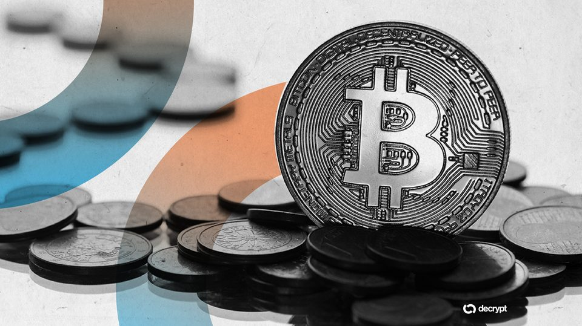
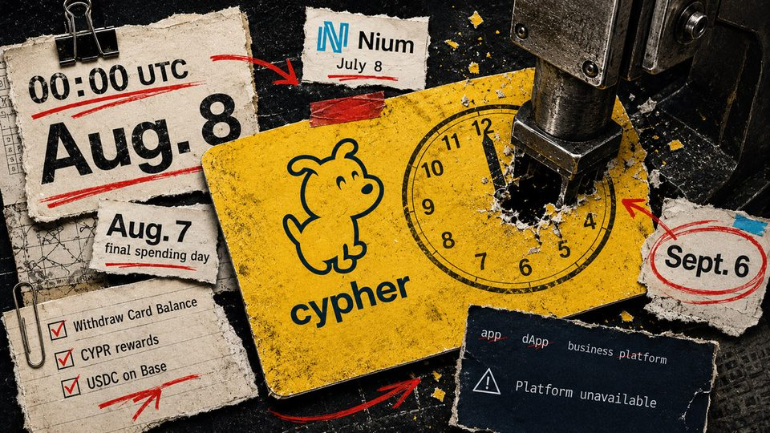
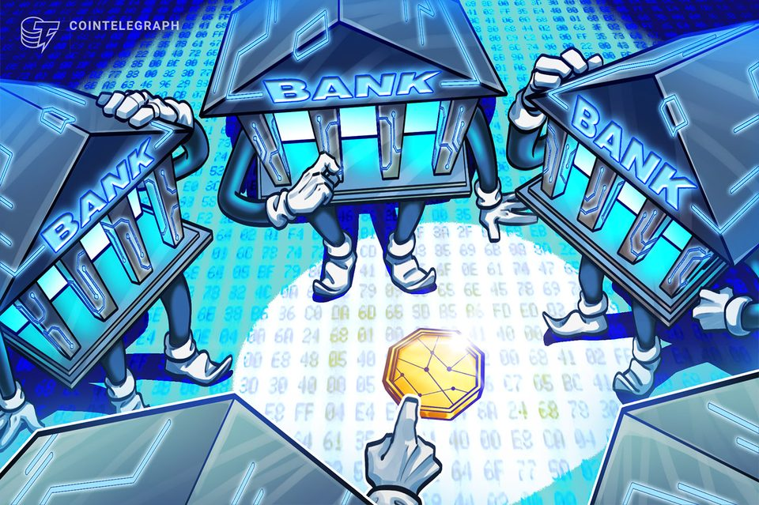
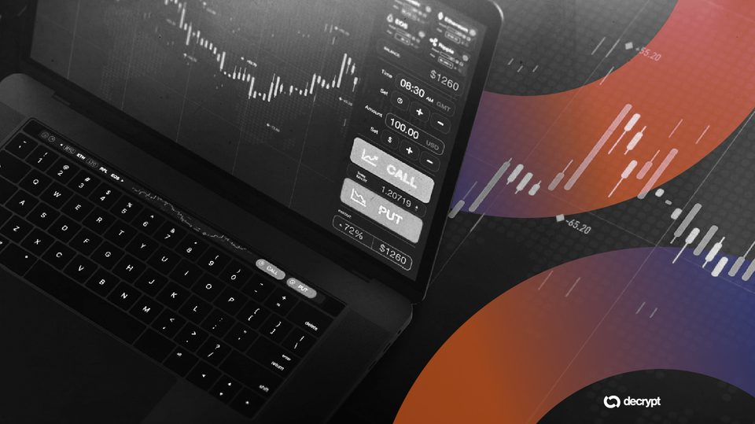

August 7, 2026
Daily headline set with source diversity, cleaned links, and local static rendering.
OpenAI's First Device Is a $300-Plus Doughnut-Shaped Speaker: Report
Designed with Jony Ive's LoveFrom studio, the screenless gadget is slated for 2027 and will use cameras, lights and moving parts.
Wintermute takes aim at Wall Street's crypto ETF gatekeepers
The proprietary-only entity can pursue authorized-participant work, while DTC access and a fund-distributor agreement remain separate. The post Wintermute takes aim at Wall Street’s crypto ETF gatekeepers appeared first...
Bitcoin price tags $65.3K August high as low US jobs numbers cool Fed rate bets
Bitcoin hit month-to-date highs above $65,000 as risk-assets gained on low US nonfarm payrolls data.
OKX's Rafique doubts Clarity Act will pass, warns optimism is already priced into bitcoin
OKX's Rafique doubts Clarity Act will pass, warns optimism is already priced into bitcoin

Bitcoin Wallet Dormant Since 2011 Moves Millions in BTC
A Bitcoin address that had stayed silent for 15 years just sent its coins out for the first time.

If you use a Cypher or Osmosis card, your spending dies tonight and unbacked wallets could go with it
Aug. 7 is the final spending day; cardholders should finish withdrawals, rewards claims and wallet-access steps before the later date. The post If you use a Cypher or Osmosis card, your spending dies tonight and...

Crypto Biz: Crypto's biggest business is starting to look a lot like banking
Crypto business is converging with banking as stablecoin reserves, tokenized funds, Treasury income and balance sheet management become key profit drivers.
How a five-second trick let traders drain millions from Polymarket
How a five-second trick let traders drain millions from Polymarket

Tokenized Asset Deposits Tripled to $7.4B as DeFi Shrank: CoinShares
Gold, Treasuries and the S&P 500 led the growth, in a year when spot volumes on decentralized exchanges fell by roughly 70%.
MARA sold almost all its mined Bitcoin, then pledged 18,750 BTC for an AI dream with no disclosed safety net
The miner sold 2,213 BTC and later pledged 18,750 BTC, while the differently dated collateral pools cannot be reconciled. The post MARA sold almost all its mined Bitcoin, then pledged 18,750 BTC for an AI dream with no...

Here's what happened in crypto today
Need to know what happened in crypto today? Here is the latest news on daily trends and events impacting Bitcoin price, blockchain, DeFi, Web3 and crypto regulation.
A part of FTX survived, and it's the case for the CLARITY Act
A part of FTX survived, and it's the case for the CLARITY Act